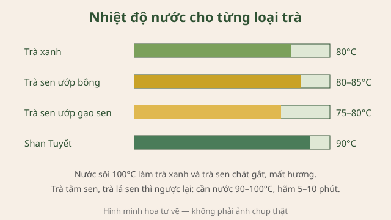

Pha trà Việt tại nhà: trà xanh, trà sen, trà đá và cách hãm cho đúng vị
Tác giả: Ruler
Trà Việt không chỉ có một kiểu uống. Có người pha trà xanh mỗi sáng trong ấm nhỏ, có người pha trà sen để đãi khách, có người chỉ cần một ly trà đá mát lạnh buổi trưa. Mỗi kiểu uống lại cần một cách pha khác nhau, và điểm khác nhau đó nằm ở ba con số: lượng trà, nhiệt độ nước và thời gian hãm. Chỉ cần thay đổi một trong ba con số này, cùng một gói trà cũng có thể cho ra ly nhạt, ly đậm, ly thơm hay ly chát gắt.
Bài này viết về cách pha trà lá rời tại nhà, tập trung vào trà xanh, trà sen và trà Shan Tuyết, cùng cách pha trà túi lọc và trà đá cho người bận rộn. Bài không khẳng định lợi ích sức khỏe của trà. Bài chỉ hướng dẫn cách pha, để bạn tự nếm và chỉnh theo khẩu vị của mình.
Trước hết, biết mình đang cầm loại trà nào
Trà xanh là loại trà làm từ lá chè non, ít oxy hóa, giữ màu xanh của lá và vị chát nhẹ đặc trưng. Trà xanh Thái Nguyên là loại quen thuộc nhất với nhiều người Việt, thường dùng làm trà nền cho trà sen. Trà Shan Tuyết là loại trà làm từ búp chè mọc ở vùng núi cao, lá phủ lông trắng như tuyết, vị thường êm và ngọt hậu hơn trà xanh đồng bằng. Hai loại này đều là trà lá chè thật, nên cách pha của chúng gần nhau, chỉ khác nhau ở nhiệt độ và thời gian hãm.
Trà sen là trà xanh đã được ướp hương sen. Có hai cách ướp chính: ướp trong bông sen qua đêm, và ướp với gạo sen qua nhiều lượt, mỗi lượt sàng bỏ gạo cũ rồi sấy khô. Trà ướp bông có hương sen nằm trong lòng bông, phần trà sát nhị thường thơm đậm hơn. Trà ướp gạo sen có hương bám đều mặt cánh trà sau nhiều lượt ủ và sấy. Dù ướp theo cách nào, hương sen cũng chỉ bám mỏng ở mặt ngoài cánh trà, nên trà sen cần pha nhẹ tay hơn trà xanh thường: nước không quá nóng, không tráng trà lâu, không mở nắp khi hãm.
Ngoài trà lá chè, còn có trà tâm sen và trà lá sen. Hai loại này làm từ chính cây sen, không có lá chè, nên cách pha của chúng khác hẳn trà ướp sen. Trà tâm sen là mầm xanh trong hạt sen, trà lá sen là lá sen phơi khô. Hai loại này cần nước nóng hơn và hãm lâu hơn nhiều so với trà ướp sen. Nếu bạn pha trà tâm sen bằng nước 80 độ C như pha trà sen, bạn sẽ thấy gần như không ra vị. Ngược lại, nếu bạn pha trà ướp sen bằng nước sôi già như pha trà tâm sen, hương sen sẽ bay sạch sau nước đầu.
Trà túi lọc là trà đã xay nhỏ và đóng trong túi giấy. Loại này tiện cho người bận rộn, nhưng vì trà đã xay nhỏ nên diện tích tiếp xúc với nước lớn hơn, và thời gian hãm cần ngắn hơn so với trà lá rời cùng loại. Bạn không nên hãm trà túi lọc quá lâu rồi vắt kiệt túi, vì làm vậy sẽ ép ra nhiều chất gây chát và ly sẽ đắng gắt.
Ba con số quyết định hương vị: lượng trà, nhiệt độ, thời gian
Bảng trà dưới đây gom các mức khởi đầu từ hai hướng dẫn pha trà độc lập, tính cho mỗi 100ml nước lá rời. Bạn nên dùng bảng này để bắt đầu, rồi nếm và chỉnh dần theo khẩu vị và chiếc ấm của mình.
| Loại trà | Lượng trà cho 100ml nước | Nhiệt độ nước | Thời gian hãm ấm nhỏ |
|---|---|---|---|
| Trà xanh | Khoảng 4g | Khoảng 80°C | Nước đầu khoảng 20 giây, các nước sau 30, 45 rồi 60 giây |
| Trà sen ướp bông | Khoảng 4g (4–5g cho ấm 150ml) | 80–85°C | Nước đầu khoảng 30 giây, các nước sau 40, 55 rồi 75 giây |
| Trà sen ướp gạo sen | Khoảng 3g | 75–80°C | Nước đầu khoảng 30–40 giây, hương rõ ở 2 nước đầu |
| Shan Tuyết | Khoảng 4g | Khoảng 90°C | Nước đầu khoảng 25 giây, các nước sau 35, 45, 60 rồi 80 giây |
| Trà lài | Khoảng 3g | Khoảng 80°C | Nước đầu khoảng 30 giây, các nước sau 45 rồi 60 giây |
| Trà ủ lạnh | Khoảng 1g | Khoảng 25°C | Khoảng 7 giờ |
Bạn sẽ thấy trà sen có hai hàng riêng trong bảng, vì hai cách ướp cần nước khác nhau. Tiệm Nhà An ghi trà sen nói chung ở 85°C, 4g cho 100ml nước, hãm 30, 40, 55 rồi 75 giây. Thuận Trà, trong bài hướng dẫn pha từng loại trà sen, ghi trà ướp bông ở 80–85°C với 4–5g cho ấm 150ml, nước đầu 30–40 giây; còn trà ướp gạo sen ở 75–80°C với khoảng 3g cho chén nhỏ, hãm 30–40 giây. Nhưng cũng chính Thuận Trà, trong bài 7 mẹo pha trà sen cốt trà nõn, ghi trà sen ướp gạo sen truyền thống pha ở 85–90°C với 5–7g cho ấm 120–150ml. Hai bài của cùng một đơn vị ghi khác nhau cho trà ướp gạo sen, vì cốt trà khác nhau: bài ướp gạo sen thường dùng trà nền nhẹ tay hơn, bài mẹo dùng cốt trà nõn và cho lượng trà nhiều hơn. Bài này không chọn một con số để khẳng định là đúng duy nhất. Nếu bạn không biết gói trà của mình ướp theo cách nào và cốt là gì, hãy bắt đầu ở 80–85°C và nếm nước đầu, rồi chỉnh lên hoặc xuống ở nước sau.
Nhiệt độ nước cũng cần hiểu theo cách thực tế. Nước sôi 100 độ C rót thẳng vào trà xanh sẽ làm trà chát gắt và hương bay nhanh. Nước dưới 80 độ C thì hương ra chậm, nước đầu nhạt, phải ủ lâu mà vẫn thiếu độ dày. Với trà xanh, 80 độ C là mức cân bằng. Với trà Shan Tuyết, 90 độ C là mức cân bằng, vì búp trà dày hơn và cần nhiệt cao hơn để mở vị. Nếu bạn không có nhiệt kế, hãy đun sôi nước rồi mở nắp ấm đun chờ 1–2 phút cho nước nguội bớt. Ấm siêu tốc có nút chỉnh nhiệt thì đặt đúng mức trong bảng.

Hình minh họa tự vẽ — không phải ảnh chụp thật.
Lượng trà trong bảng tính cho mỗi 100ml nước. Với ấm nhỏ 150ml, bạn cần khoảng 6g trà sen hoặc trà xanh. Với cốc lớn 250ml, bạn cần khoảng 10g trà lá rời nếu pha theo tỉ lệ này, nhưng nhiều người pha cốc lớn chỉ dùng 2–3g trà cho 250ml nước và hãm 2–3 phút, vì họ uống một cốc lớn thay vì nhiều chén nhỏ. Hai cách tính này khác nhau vì cách uống khác nhau, không phải vì một bên ghi sai. Bạn nên chọn một cách và giữ nguyên trong vài lần đầu, rồi mới đổi sang cách còn lại để so sánh.
Pha trà bằng ấm nhỏ trong sáu bước
Pha ấm nhỏ là cách pha nhiều trà, hãm ngắn và uống nhiều lần nước. Cách này hợp với trà xanh, trà sen và trà Shan Tuyết, vì mỗi nước hãm lại cho ra một vị khác nhau, và bạn có thể nếm được sự thay đổi đó.
Bước đầu tiên là tráng ấm và chén bằng nước sôi. Bạn rót nước sôi vào ấm, đậy nắp, lắc nhẹ rồi đổ đi. Chén cũng tráng qua nước sôi. Bước này làm nóng đều bộ ấm, để nước pha không bị nguội đi khi chạm vào sứ lạnh. Với trà sen, bạn chỉ tráng ấm chén, không tráng trà. Hương sen bám ở mặt ngoài cánh trà, nên lượt nước tráng đổ đi sẽ cuốn theo luôn phần thơm quý giá. Nếu bạn quen tay tráng trà xanh thường, hãy chuyển thói quen đó sang tráng ấm chén khi pha trà sen.
Bước thứ hai là cho trà vào ấm. Với ấm 150ml, bạn cho khoảng 6g trà. Lần đầu uống một loại trà mới, hãy pha nhạt hơn một chút để vị chát không lấn mất hương. Bạn có thể dùng cân nhỏ để cân trà trong vài lần đầu, rồi sau đó ước lượng bằng mắt khi đã quen.
Bước thứ ba là rót nước. Bạn rót nhẹ theo thành ấm, không rót thẳng vào giữa đống trà, rồi đậy nắp ngay để giữ hương. Với trà xanh, nước khoảng 80 độ C. Với trà sen ướp bông, nước khoảng 80–85 độ C cho nước đầu; với trà ướp gạo sen, bắt đầu ở khoảng 75–80 độ C. Với trà Shan Tuyết, nước khoảng 90 độ C. Bạn không cần rót đầy ấm. Rót vừa đủ để trà nở ra, và để lại một khoảng trống nhỏ cho hơi nước.
Bước thứ tư là hãm và rót kiệt. Với trà xanh, nước đầu hãm khoảng 20 giây. Với trà sen, nước đầu hãm khoảng 30 giây. Với trà Shan Tuyết, nước đầu hãm khoảng 25 giây. Sau thời gian đó, bạn rót kiệt nước trà ra chén tống, rồi chia đều vào các chén quân. Rót kiệt là bước quan trọng. Nếu bạn để bã ngập nước giữa các lượt, trà sẽ tiếp tục chiết ra và nước sau sẽ chát gắt.
Bước thứ năm là pha tiếp các nước sau. Mỗi nước sau hãm lâu hơn nước trước khoảng 10–15 giây, vì cánh trà đã nở và cần thêm thời gian để ra vị. Với trà sen, các nước sau hãm khoảng 40, 55 rồi 75 giây. Với trà xanh, các nước sau hãm khoảng 30, 45 rồi 60 giây. Một ấm trà xanh hoặc trà sen thường pha được 3–4 nước; trà ô long, theo Tiệm Nhà An, thường được 5–6 nước. Nước đầu hương rõ nhất, nước thứ hai vị và hương cân nhau, nước thứ ba hương nhạt dần nhưng vị trà vẫn còn, nước thứ tư thường nhạt và chỉ còn vị trà nhẹ.
Bước cuối cùng là nếm và ghi lại. Sau mỗi nước, bạn ghi lại một dòng ngắn: nước này thơm hay chát, đậm hay nhạt, bạn thích hay không thích. Sau một buổi pha, bạn sẽ biết mình thích nước nào nhất, và lần sau bạn có thể hãm lâu hơn hoặc ngắn hơn để nước đầu gần với vị mình thích nhất.
Pha trà bằng cốc lớn và trà túi lọc
Không phải ai cũng có ấm nhỏ và thời gian pha nhiều nước. Pha bằng cốc lớn là cách đơn giản hơn, hợp với người uống một mình vào buổi sáng hoặc buổi trưa. Bạn cho khoảng 2–3g trà lá rời vào cốc 250ml, rót nước nóng khoảng 80–85 độ C, hãm 2–3 phút rồi lọc bỏ bã. Với trà sen pha bằng cốc, bạn cũng dùng khoảng 2–3g trà cho 250ml nước, hãm 2–3 phút. Mức này là tổng hợp từ cách pha cốc lớn của Tiệm Nhà An (2–3g cho cốc 250ml, hãm 2–3 phút) và cách pha túi lọc trà sen của Thuận Trà (một túi 2–2,5g cho 200ml nước, hãm khoảng 2 phút), không phải một con số duy nhất trong một nguồn.
Trà túi lọc còn đơn giản hơn. Bạn cho một túi trà vào cốc, rót nước nóng khoảng 80–85 độ C, hãm 2–3 phút rồi nhấc túi ra. Bạn không nên dùng thìa ép hay vắt kiệt túi trà, vì làm vậy sẽ ép ra nhiều chất gây chát trong lá trà, khiến ly trà có vị đắng và gắt hơn. Nếu bạn muốn uống trà đá, bạn có thể pha một ly trà đậm đặc hơn bằng cách dùng ít nước hơn bình thường, đợi trà nguội bớt rồi thêm đá vào. Cách này giữ được vị trà tốt hơn là pha trà loãng rồi cho đá vào ngay.
Trà đá và trà ủ lạnh: hai cách uống mát khác nhau
Trà đá là trà pha nóng rồi làm lạnh bằng đá. Bạn pha trà xanh hoặc trà sen đậm hơn bình thường, để nguội bớt, rồi rót lên ly đầy đá. Trà đá hợp với buổi trưa nóng, uống nhanh và giải khát. Bạn nên pha trà đá bằng trà xanh, vì trà xanh cho nước trong và vị chát nhẹ, hợp với đá. Trà sen pha đá vẫn uống được, nhưng hương sen sẽ bay nhanh khi gặp đá lạnh, nên bạn nên uống ngay sau khi pha.
Trà ủ lạnh là cách pha khác hẳn: bạn ngâm trà trong nước nguội rồi để trong tủ lạnh nhiều giờ. Một hướng dẫn ghi tỉ lệ khởi đầu cho trà ủ lạnh là khoảng 1g trà cho 100ml nước ở khoảng 25 độ C, ủ khoảng 7 giờ. Cách này cho ly trà êm, ít chát, hương nhẹ, hợp với người không thích vị chát của trà nóng. Bạn nên dùng bình thủy tinh có nắp, để trong tủ lạnh, và lọc bỏ bã sau khi ủ xong. Trà ủ lạnh không phải là trà nóng để nguội. Nó là một cách pha riêng, với lượng trà ít hơn và thời gian dài hơn rất nhiều.
Lỗi thường gặp khi pha trà tại nhà
Lỗi đầu tiên là dùng nước quá nóng cho mọi loại trà. Nước sôi già 100 độ C có thể hợp với trà tâm sen và trà lá sen, nhưng lại làm hỏng trà xanh và trà sen. Nếu bạn chỉ có một ấm đun không chỉnh nhiệt, hãy đun sôi rồi chờ nước nguội bớt trước khi pha trà xanh và trà sen. Bạn có thể thử bằng cách rót nước ra cốc thủy tinh, chờ 1–2 phút, rồi mới rót vào ấm trà.
Lỗi thứ hai là hãm quá lâu. Nhiều người nghĩ hãm càng lâu thì trà càng đậm và càng ngon. Thực tế, hãm quá lâu làm trà chát gắt, hương bay mất, và nước sau không còn ngon. Với ấm nhỏ, bạn nên hãm tính bằng giây, không tính bằng phút. Với cốc lớn, bạn nên hãm 2–3 phút rồi lọc bỏ bã, không để bã ngâm trong cốc suốt buổi.
Lỗi thứ ba là dùng quá nhiều trà cho ấm quá to. Một ấm lớn 500ml mà chỉ cho 6g trà sẽ cho nước nhạt, dù bạn hãm lâu tới đâu. Một ấm nhỏ 150ml mà cho 10g trà sẽ cho nước đậm gắt, dù bạn hãm ngắn tới đâu. Bạn nên chọn ấm vừa với lượng trà mình có, và giữ tỉ lệ khoảng 4g trà cho 100ml nước làm điểm bắt đầu.
Lỗi thứ tư là mở nắp khi hãm trà sen. Hương sen bay rất nhanh khi gặp không khí. Nếu bạn mở nắp để xem trà đã nở chưa, hương sẽ thoát ra ngoài và nước trà sẽ mất đi phần thơm quý nhất. Hãy đậy nắp ngay sau khi rót nước, và chỉ mở nắp khi đã tới lúc rót kiệt.
Kết luận
Pha trà Việt tại nhà không khó, nhưng cần đúng ba con số: lượng trà, nhiệt độ nước và thời gian hãm. Trà xanh bắt đầu ở khoảng 4g cho 100ml nước, 80 độ C, hãm 20 giây cho nước đầu. Trà sen ướp bông bắt đầu ở 80–85 độ C, trà ướp gạo sen bắt đầu ở 75–80 độ C, hãm 30 giây cho nước đầu; riêng trà sen cốt trà nõn, một hướng dẫn ghi 85–90 độ C với 5–7g cho ấm 120–150ml, nên bạn cần xem gói trà của mình là loại nào trước khi chọn nhiệt độ. Trà Shan Tuyết bắt đầu ở khoảng 4g cho 100ml nước, 90 độ C, hãm 25 giây cho nước đầu. Các nước sau hãm lâu dần, mỗi nước thêm khoảng 10–15 giây. Bạn không cần nhớ hết bảng. Bạn chỉ cần pha một ấm, nếm từng nước, ghi lại nước nào mình thích nhất, rồi lần sau hãm theo đúng nước đó. Sau vài buổi, bạn sẽ có cách pha trà của riêng mình.
Nguồn tham khảo
- Tiệm Nhà An, "Pha trà tại nhà: tỉ lệ, nhiệt độ và thời gian hãm" — trà xanh 4g/100ml, 80°C, hãm 20, 30, 45, 60 giây; trà sen 4g/100ml, 85°C, hãm 30, 40, 55, 75 giây; Shan Tuyết 4g/100ml, 90°C, hãm 25, 35, 45, 60, 80 giây; trà ủ lạnh 1g/100ml, 25°C, 7 giờ (truy cập 23/11/2026): https://tiemnhaan.com/ko/tra-viet/pha-tra
- Thuận Trà Thái Nguyên, "Pha trà sen thế nào cho từng loại trà sen?" — trà ướp sen dùng nước 80–85°C, 4–5g cho ấm 150ml, nước đầu 30–40 giây, pha được 3–4 nước; trà ướp gạo sen dùng nước 75–80°C; trà tâm sen dùng nước 90–95°C, hãm 5–7 phút; trà lá sen dùng nước sôi, hãm 5–10 phút (truy cập 23/11/2026): https://thuantrathainguyen.com/blogs/news/tra-sen-la-gi-cac-loai-tra-sen-va-pha-tra-sen-dung-cach
- Thuận Trà Thái Nguyên, "Trà sen pha sao cho thơm: 7 mẹo nghệ nhân" — trà sen cốt trà nõn pha ở 85–90°C là vừa, nước 100°C làm hương sen bay nhanh và kéo vị chát lên; tỉ lệ khoảng 1g trà sen cho 20–25ml nước, tức 5–7g cho ấm 120–150ml; không tráng trà sen, chỉ tráng ấm chén (truy cập 23/11/2026): https://thuantrathainguyen.com/blogs/news/tra-sen-meo-pha-dung-chuan-nghe-nhan